Histórico cultural
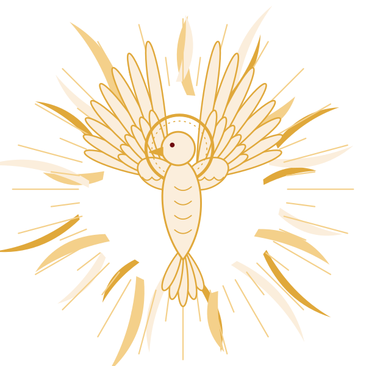
O que é a Festa do Divino?
A Festa do Divino Espírito Santo é uma grande celebração religiosa e popular. Nela, as pessoas homenageiam o Espírito Santo, que na fé cristã é a Terceira Pessoa da Santíssima Trindade, ao lado de Deus Pai e de Deus Filho. Na festa, ele é chamado carinhosamente de Divino e representado por uma pomba branca.
É uma das devoções mais antigas do catolicismo popular. Nela convivem coisas que parecem opostas: o sagrado e o profano, a tradição e a modernidade, a riqueza e a simplicidade. Em vez de se excluírem, esses lados se completam.
O lado sagrado
Missas, procissões, novenas, ladainhas e benditos em louvor ao Divino. É o tempo da oração, do pagamento de promessas e do agradecimento.
O lado profano
As celebrações do Império do Divino, com folias, danças, cortejos, mesas de doces e outras expressões culturais. É o tempo da alegria e da partilha.
A festa costuma acontecer entre maio e junho, em torno do Domingo de Pentecostes, celebrado cinquenta dias depois da Páscoa, contando o próprio domingo de Páscoa. Pentecostes lembra o dia em que, segundo a Bíblia, o Espírito Santo desceu sobre os apóstolos.
De onde vem a festa?
A Festa do Divino nasceu em Portugal, no século XIV, embora o culto ao Espírito Santo seja bem mais antigo. De lá, a devoção chegou às ilhas dos Açores e, com os colonizadores portugueses, ao Brasil. Por aqui, ela ganhou força entre os séculos XVIII e XIX, trazida principalmente por famílias açorianas. No Maranhão, firmou-se em Alcântara e se espalhou pelo estado. Os historiadores contam duas versões para a origem da festa:
A versão da rainha Isabel
No século XIV, na vila de Alenquer, em Portugal, a rainha Isabel de Aragão (1271–1336), esposa do rei D. Dinis e mais tarde chamada de Rainha Santa, promoveu celebrações pela construção de uma igreja dedicada ao Espírito Santo. Toda a corte foi convidada e as ruas foram enfeitadas. Onde a corte não podia estar, os devotos se vestiam de reis e rainhas. Dessa ideia vem o Império do Divino.
A versão do abade Joaquim de Fiore
Joaquim de Fiore (c. 1135–1202), abade italiano, ensinava que, depois do tempo de Deus Pai e do tempo de Deus Filho, chegaria o tempo do Espírito Santo, que governaria o mundo com paz, fraternidade e amor. No século XIII, essas ideias se espalharam pela Europa.
Histórias curiosas
- 1385O rei D. João I mandou organizar procissões obrigatórias em maio para afastar antigas festas pagãs chamadas Maias.
- Em alto-marA festa era tão importante que chegava a ser celebrada dentro das naus portuguesas que viajavam para a África, a Índia e o Brasil.
- Rio antigoO Imperador do Divino podia ser uma criança ou um adulto e, em alguns lugares, tinha “direitos de rei”, como o de libertar presos comuns.
- 1822Na Independência, José Bonifácio escolheu o título de Imperador do Brasil porque o povo já conhecia a palavra “Imperador” por causa da festa, e menos a palavra “Rei”.
- 1839O artista francês Jean-Baptiste Debret publicou um desenho do cortejo do Divino no Rio de Janeiro, com o menino imperador recolhendo doações para a festa.
A festa em São Luís
Em São Luís, a festa tem uma marca própria: ela faz parte do calendário dos terreiros de tambor de mina. Quase todos os terreiros organizam uma festa do Divino por ano, e o Centro de Cultura Popular Domingos Vieira Filho estimava mais de cem festas anuais na cidade. Quem conduz a música e o ritual são as caixeiras, mulheres que tocam a caixa e cantam os louvores.
No centro da festa estão um altar ricamente decorado, a tribuna, um mastro levantado e derrubado com ritual, e um Império de crianças vestidas como uma corte, com imperador, imperatriz e mordomos.
A história em quatro quadros
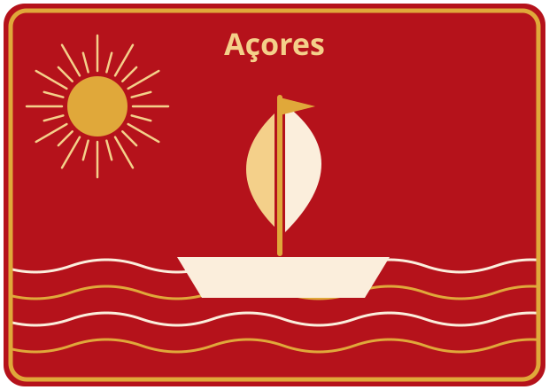
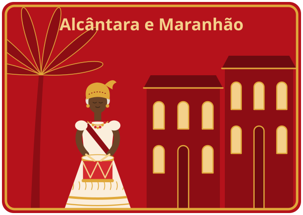
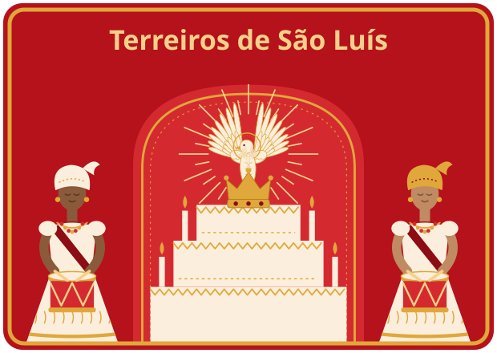
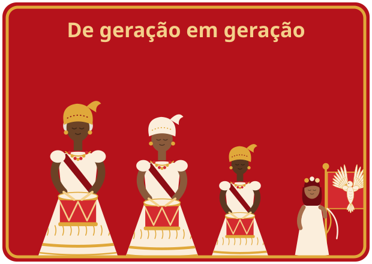
Os símbolos da festa
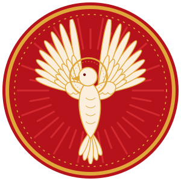
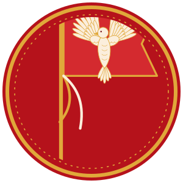
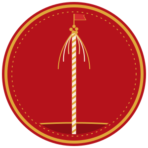
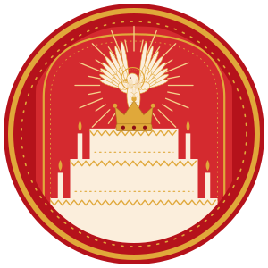
Linha do tempo: das origens ao Brasil
- Séc. XIIO abade Joaquim de Fiore anuncia a chegada do “tempo do Espírito Santo”. Suas ideias se espalham pela Europa no século seguinte.
- Séc. XIVEm Alenquer, a rainha Isabel de Aragão promove celebrações ao Espírito Santo. A festa ganha a forma de uma corte, o Império.
- Período colonialA devoção chega ao Brasil com os portugueses e ganha força entre os séculos XVIII e XIX, com a vinda de açorianos. No Maranhão, firma-se em Alcântara.
- 2010 e 2013O IPHAN registra como patrimônio cultural do Brasil as festas do Divino de Pirenópolis (GO) e de Paraty (RJ).
Linha do tempo: a festa em São Luís
- Período colonialA devoção ao Divino chega ao Brasil com casais açorianos trazidos pela Coroa portuguesa. (Ferretti, 2005)
- Fim do séc. XIXHá notícias da festa do Divino na Casa das Minas, terreiro jeje de São Luís. (Ferretti, 2005)
- 1950Maria Celeste Santos é iniciada como vodunsi na Casa das Minas. Em 1969 ela passa a organizar a festa do Divino da casa. (Ferretti, 2005)
- 1980A caixeira Dona Teté começa a trabalhar com o Laborarte e ensina o toque de caixa para um espetáculo. Em 1986 cria um grupo de cacuriá. (Leal, 2018)
- 2004Marise Barbosa publica estudo sobre as caixeiras da Casa Fanti-Ashanti, que já faziam a festa havia mais de vinte anos. (Barbosa, 2004)
- 2005A exposição Divino Toque do Maranhão, do Centro Nacional de Folclore e Cultura Popular (IPHAN), leva a festa maranhense ao Rio de Janeiro. (Ferretti, 2005)
- 2015Dona Jacy Gomes Serra conduz no Laborarte a oficina “No Bater da Minha Caixa”, para formar novas caixeiras. (O Imparcial, 2015)
- 2020Lysandra Domingues defende tese sobre as caixeiras de São Luís, guiada por três caixeiras-régias: Dona Luzia, Dona Jacy e Dona Rosa. (Domingues, 2020)
- 2024O Museu Casa de Nhozinho, na Praia Grande, faz o primeiro cortejo do Divino com toque só de mulheres caixeiras, com a Família Menezes. (O Imparcial, 2024)
Quem são as caixeiras
Elas cantam, dançam, tocam a caixa e abrem e fecham os trabalhos da festa, fazendo a ligação entre o mundo terreno e o divino. Tradicionalmente são mulheres com mais de cinquenta anos, em geral negras, de baixa renda e moradoras de bairros periféricos. Tocam por promessa e devoção, sem remuneração, e costumam ser caixeiras a vida toda. Em alguns festejos, homens também fazem parte do grupo.
Domingues, 2020; Ferretti, 2005
Festa e terreiro
A festa liga o catolicismo popular ao tambor de mina. Depois do encerramento, em muitas casas há um toque de mina diante da tribuna em homenagem às entidades.
Leal, 2018
Quando acontece
Várias casas fazem a festa no Domingo de Pentecostes, mas como são dezenas de festas, elas se espalham por boa parte do ano. As caixeiras-régias tocam em muitas casas: Dona Jacy contava 32 além da Casa das Minas.
Ferretti, 2005; O Imparcial, 2015
O trabalho das caixeiras
A caixa
Tambor de madeira coberto com pele de animal, parecido com a caixa militar e tocado com duas baquetas. Os toques são precisos e sincronizados, e são ensinados às novas gerações.
As alvoradas
São cantadas de madrugada, por volta das quatro horas, em volta do mastro. Há salvas de caixa também ao meio-dia e ao anoitecer.
Os benditos
No bendito de abertura, canta-se a história de Cristo do nascimento até Pentecostes. No Bendito de Hortelã, do encerramento, a história vai até a morte e a ressurreição, com ênfase na despedida.
Uma brincadeira
Caixeiras e Império passam horas procurando, nas casas da vizinhança, símbolos escondidos antes, como cetro, coroa e bandeira. A casa que “roubou” os símbolos paga uma prenda, geralmente bebidas e refrigerantes.
A festa nos terreiros
No Maranhão, a festa do Divino também faz parte do calendário religioso dos terreiros de tambor de mina, a principal religião afro-maranhense. Nesses lugares, o Divino é celebrado junto com o culto às entidades de matriz africana. Por isso, a festa nem sempre acontece só em Pentecostes e pode coincidir com o mês de santos católicos.
Essa aproximação tem uma história: no passado, pessoas escravizadas mantinham oratórios católicos para se proteger de perseguições e castigos. Hoje, os calendários dos terreiros apenas coincidem com as festas dos santos católicos, e cada religião mantém o seu próprio sentido.
Uma festa, muitos jeitos
A festa veio de Portugal e manteve os símbolos principais e a estrutura básica. No Brasil, porém, ela foi se misturando com a cultura de cada lugar, incluindo influências africanas e indígenas. Por isso, cada região tem suas marcas.
| Lugar | Marca da festa |
|---|---|
| Vale do Guaporé (RO) | Procissão fluvial e ritual da oração nas águas. A região reúne comunidades ribeirinhas, quilombolas, indígenas e bolivianas. |
| Paraty (RJ) | Dança do Marrapaiá. |
| Pirenópolis (GO) | Cavalhadas, que encenam as batalhas entre cristãos e mouros. |
| Alcântara (MA) | Caixeiras do Divino, Império e doce de espécie. |
| Mogi das Cruzes (SP) e Itajaí (SC) | A festa é mais ligada à igreja: a cerimônia de início e a de encerramento acontecem lá dentro, e a corte do Império ocupa tronos na própria igreja. |
O ciclo da festa, passo a passo
Toque em cada etapa para ver o que acontece e qual toque das caixas a acompanha. A sequência segue a descrição de Sergio Ferretti para os terreiros de São Luís; cada casa tem suas variações.
Os momentos da festa pelo Brasil
Cada lugar tem o seu jeito de festejar, mas alguns momentos aparecem em muitas celebrações:
- A escolha do Império. De um ano para o outro, são escolhidos o casal de imperadores, os mordomos, os padrinhos do mastro e os colaboradores.
- A preparação das roupas. Vestimentas e cores são definidas com cerca de seis meses de antecedência.
- O corte e o levantamento do mastro. Uma árvore é procurada e derrubada na mata e, depois, transportada e fixada no local da festa.
- A abertura da tribuna. O altar do Divino é montado e aberto com um ritual.
- As alvoradas. Nos dias seguintes ao levantamento do mastro, há cantos junto à tribuna, ao amanhecer.
- O cortejo até a igreja. A corte do Império vai com os devotos até a igreja para ser abençoada pela autoridade religiosa.
- A coroação e as homenagens. Os imperadores são coroados, e o Divino é homenageado com rituais religiosos e populares.
- A distribuição de alimentos. Comidas e doces são partilhados com quem vai prestigiar a festa.
Como se forma o Império
A festa se organiza em duas partes: uma dedicada ao Divino e outra ao Império do Divino, a corte simbólica que representa a realeza. Em alguns lugares, o Império é formado por adultos. Em outros, como em São Luís, por crianças e adolescentes, que representam os adultos escolhidos como patronos da festa.
| Personagem | O que faz |
|---|---|
| Imperador e imperatriz | São os principais responsáveis pela preparação e pela realização da festa. Tradicionalmente, os patronos arcam com a maior parte das despesas, e esse papel pode ser alternado entre os dois. |
| Mordomo régio e mordomo-mor | Fazem parte da corte do Império. Os mordomos também têm mestre-sala e músicos. |
| Padrinhos do mastro | São escolhidos para a festa e apadrinham o mastro, um dos símbolos mais importantes dela. |
| Aias, vassalo e mestre-sala | Acompanham a imperatriz. Ela pode ter duas aias, um vassalo e um mestre-sala, além de músicos de sopro. |
| Colaboradores | Outras pessoas que também compõem o Império e ajudam a realizar a festa. |
Os membros do Império costumam ser escolhidos de um ano para o outro, e as roupas e as cores são definidas com cerca de seis meses de antecedência. Nas festas mais tradicionais, o figurino imita as roupas da corte portuguesa de outros tempos.
Sabores da festa
A comida é parte importante da Festa do Divino. A distribuição de alimentos, geralmente carnes e doces, é uma das atividades da festa e simboliza a partilha. Os doces ocupam lugar de destaque:
Doce de espécie
Típico de Alcântara, no Maranhão, a cidade onde o Divino se firmou no estado.
Doce roseta
Típico de Santa Catarina, outro estado onde a festa tem forte presença açoriana.
Alfenim
Em Portugal, é o doce mais famoso e reconhecido historicamente: uma massa de açúcar branco modelada em figurinhas, que antigamente era servida em bandejas de prata.
Em algumas festas, os Impérios montam mesas de doces que ficam expostas por dois ou três dias, para serem admiradas. Depois, os responsáveis distribuem os doces a quem foi prestigiar a festa. Em São Luís, cada membro do Império oferece a sua mesa no dia da festa.
Formação de gerações
Ninguém aprende a ser caixeira em livro. O saber passa pela convivência, pela família e pela prática nas próprias festas. A pesquisadora Lysandra Domingues registra que, sem tocar nos rituais, o aprendizado fica incompleto. Há três frentes em que a festa forma gente nova.
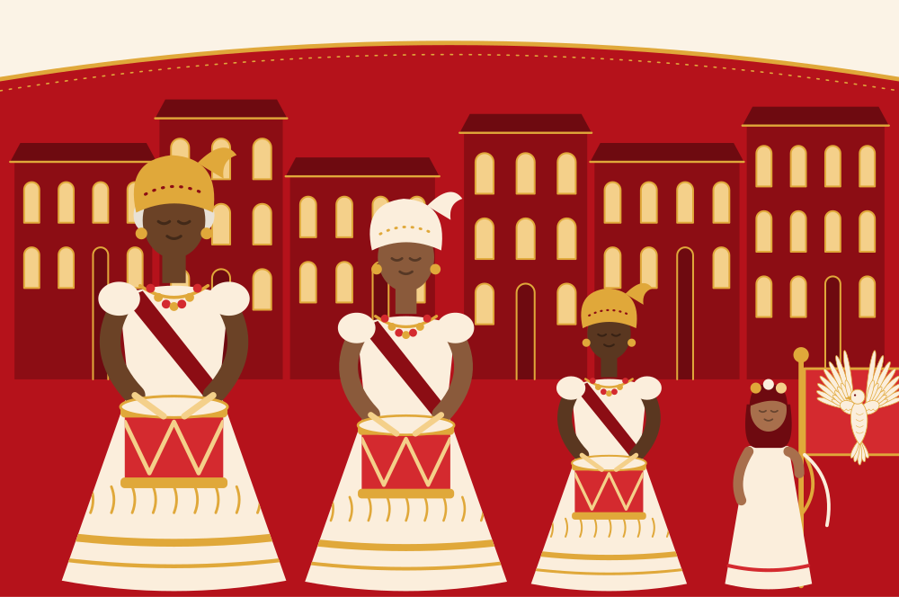
O Império
Cinco a dez ou mais crianças vestidas com roupas de corte formam o Império: casal de imperadores, mordomo régio, mordomo-mor e outros cargos. A cada ano as posses (trajes e insígnias) passam para as próximas crianças. Meninas bandeireiras carregam as bandeiras e dançam com as caixeiras diante do trono e do mastro.
Ferretti, 2005; Leal, 2018
A família
A transmissão é oral e quase sempre familiar. Dona Jacy Gomes Serra aprendeu com a avó e a mãe; em 2015, uma filha de 17 anos já a acompanhava. As irmãs Menezes cresceram ouvindo os pais cantarem à noite.
O Imparcial, 2015 e 2024
Oficinas e grupos
Oficinas de caixa no Laborarte e na Terreiro de Iemanjá abrem o saber para estudantes, artistas e pesquisadores. Em 2015, a oficina de Dona Jacy ensinou história da festa, cânticos e repentes improvisados, sem exigir conhecimento prévio. Em 2024, o cortejo do Museu Casa de Nhozinho emprestou caixas a mulheres que queriam tocar.
Leal, 2018; O Imparcial, 2015 e 2024
Hierarquia do grupo de caixeiras
Caixeira-régia: dirige o grupo e precisa saber todos os cânticos e etapas do ritual.
Caixeira-mor: ajuda a régia e a substitui quando preciso.
Caixeiras: grupo de oito ou mais mulheres que tocam e cantam.
Ferretti, 2005; Leal, 2018; Domingues, 2020
A festa que ensina
Além de religiosa e cultural, a Festa do Divino também é educativa. Tudo nela segue um planejamento que obedece a uma tradição passada de geração em geração, principalmente pela tradição oral: os mais velhos contam, mostram e ensinam, e os mais novos aprendem participando. Quem participa da festa aprende, por exemplo:
História
A história do Brasil e de Portugal, por meio de histórias, comportamentos e hábitos das duas culturas.
Música
A tocar instrumentos, como a caixa, e a cantar, dançar e rezar, sem precisar de aulas formais.
Convivência
A se comportar de acordo com o papel que ocupa na corte, no caso das crianças e dos adolescentes do Império.
Valores
Solidariedade, partilha e respeito mútuo, vividos na prática durante toda a festa.
E a escola com isso?
A festa reúne arte, história, ensino religioso, geografia, língua portuguesa e outros componentes curriculares. Por isso, a escola pode usá-la para trabalhar de forma interdisciplinar: os toques e as cores na aula de Arte, a viagem da festa na de História, o mapa de São Luís na de Geografia, as palavras do glossário na de Língua Portuguesa e o respeito às diferentes formas de fé no Ensino Religioso.
A Lei nº 10.639, de 9 de janeiro de 2003, depois ampliada pela Lei nº 11.645, de 10 de março de 2008, determina que a história e a cultura africana, afro-brasileira e indígena sejam ensinadas nas escolas, independentemente da religião de cada estudante. A Festa do Divino ajuda a cumprir esse objetivo ao mostrar a diversidade cultural presente em uma tradição que faz parte da história do Brasil.
Os personagens da festa
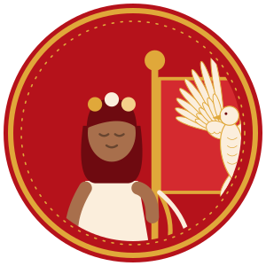
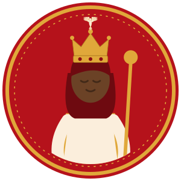
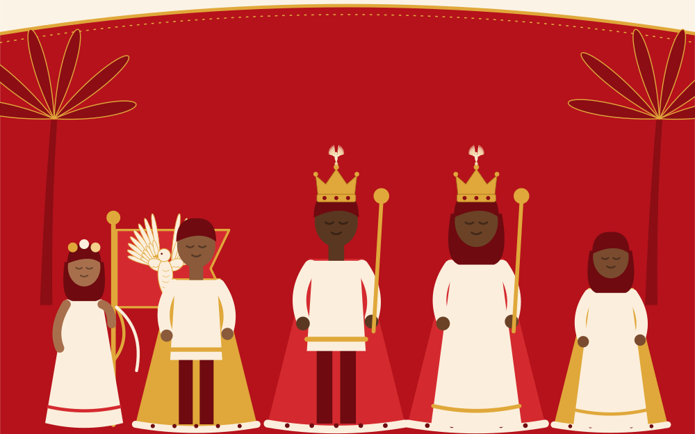
Ilustrações representam papéis da festa, não pessoas reais.
Mapeamento de mestras
Na festa do Divino, quem detém o saber são sobretudo mulheres: as caixeiras-régias. Os perfis abaixo trazem só o que está publicado em fontes que conferimos. Os retratos são ilustrações, não fotos, e podem ser trocados por fotos autorizadas. Onde falta informação, há uma marca amarela.
Mapa da festa em São Luís
Onde a festa acontece e onde seu saber é guardado e ensinado. O detalhe mostra o Centro Histórico, onde ficam os terreiros mais antigos.
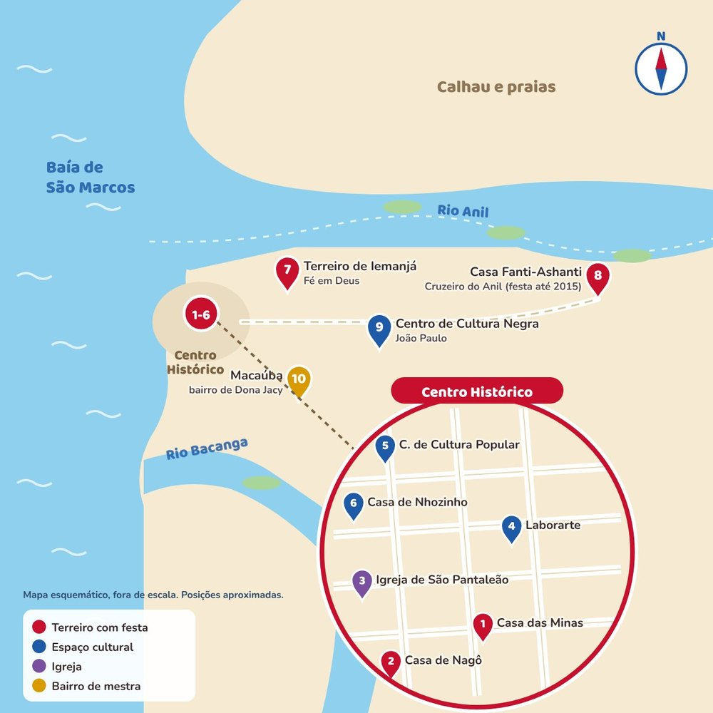
Toque em um número do mapa ou em um lugar da lista para ver a localização.
- 1Casa das MinasRua de São Pantaleão, Centro Histórico
Terreiro jeje com festa desde o fim do século XIX. Dona Celeste organizou a festa a partir de 1969; Dona Jacy foi caixeira-régia.
Ferretti, 2005 - 2Casa de NagôRua Cândido Ribeiro (Rua das Crioulas), Centro Histórico
Terreiro de mina com festa desde o início do século XX, em maio; mobiliza a Madre Deus e o Centro. Dona Luzia é caixeira-régia.
O Imparcial, 2019 e 2026; Leal, 2018 - 3Igreja de São PantaleãoCentro Histórico
Recebe a missa do festejo do Divino da Casa de Nagô.
O Imparcial, 2026 - 4LaborarteRua Jansen Müller, Centro
Laboratório de artes criado em 1972, com oficinas regulares de caixa. Dona Teté ensinou ali a partir de 1980.
Leal, 2018 - 5Centro de Cultura Popular Domingos Vieira FilhoRua do Giz, 221, Praia Grande
Guarda o cadastro das festas do Divino e um arquivo de convites.
Leal, 2018 - 6Museu Casa de NhozinhoRua Portugal, Praia Grande
Cortejo do Divino só de mulheres caixeiras, com a Família Menezes (2024).
O Imparcial, 2024 - 7Terreiro de IemanjáFé em Deus
Casa de Pai Jorge Itaci; faz a festa e oficinas regulares de caixa.
Leal, 2018; O Imparcial, 2018 - 8Casa Fanti-AshantiCruzeiro do Anil
Terreiro de Pai Euclides com grupo próprio de caixeiras. A festa, ligada à de Oxalá em julho, foi interrompida em 2015.
Mariano, 2020; Barbosa, 2004 - 9Centro de Cultura NegraRua dos Barés, João Paulo
Recebeu o Samba Divino Nagô (2019), em apoio à festa da Casa de Nagô.
O Imparcial, 2019 - 10MacaúbaMacaúba
Bairro onde nasceu a caixeira-régia Dona Jacy Gomes Serra.
O Imparcial, 2015
Mapa esquemático, fora de escala. Há registro de festas também no Ilê Ashé Obá Izô (Pai Wender), no Jardim da Encantaria (Pai Clemente Filho) e no Terreiro Pedra Encantada (Pai José Itaparandi), sem endereço publicado. Confirme datas e horários com cada casa antes de visitar.
Glossário da festa
Repertório musical
Segundo Dona Celeste, da Casa das Minas, toda festa do Divino deve ter nove toques. Cada um tem seu momento no ritual. Além deles, cada grupo tem cantigas próprias e as caixeiras improvisam versos, os repentes.
Toque os instrumentos
Toque cada instrumento ou ouça todos juntos. Os sons são criados no próprio navegador, porque não encontramos gravações de uso livre. Os ritmos são ilustrativos: não reproduzem nenhum dos toques tradicionais, que se aprendem com as caixeiras.
Na festa: a caixa do Divino
Depois do fechamento, em muitos terreiros: o toque de mina
Em muitas casas, depois do encerramento, há um toque de mina diante da tribuna, com tambores, ferro e cabaças.
Sons sintetizados para esta cartilha.
Outra lista, outro grupo
As Caixeiras do Divino de Pindaré-Mirim citam como toques obrigatórios: Espírito Santo dobrado, Alvorada, Alvoradinha, Santana, Nossa Senhora da Guia, Hino da missa, Dança das caixeiras e Repasse das posses. O repertório de São Luís também inclui cantigas trazidas de festas do interior.
O Imparcial, 2020
Para conversar em sala
Use estas perguntas depois da leitura. Não há resposta única: o importante é ouvir as experiências de cada um.
- Você já participou ou assistiu a uma Festa do Divino? O que mais chamou a sua atenção?
- Quais são os símbolos da festa? O que cada um representa?
- Quem faz parte do Império do Divino? Por que as crianças e os adolescentes também participam?
- O que as caixeiras fazem na festa? Por que a tradição oral é tão importante para elas?
- Quais doces e comidas fazem parte da festa na sua cidade ou região?
- A festa veio de Portugal e se misturou com outras culturas. Que elementos africanos, indígenas e portugueses você consegue identificar?
- Como as pessoas de diferentes religiões podem aprender umas com as outras a partir de uma festa como essa?
Referências
- BARBOSA, Marise. Divino no Maranhão: o particular de uma festa popular e seus diálogos. Projeto História, São Paulo, v. 28, 2004. Disponível em: https://revistas.pucsp.br/index.php/revph/article/view/10422. Acesso em: 15 out. 2026.
- BRITO, Viviane M. de. Divina tradição tocada pelas caixeiras no Rio de Janeiro. Plura: anais. Disponível em: https://revistaplura.emnuvens.com.br/anais/article/view/487/468. Acesso em: 15 out. 2026.
- CAIXEIRAS do Divino fazem vaquinha virtual. O Imparcial, São Luís, set. 2020. Disponível em: https://oimparcial.com.br/entretenimento-e-cultura/2020/09/caixeiras-do-divino-fazem-vaquinha-virtual/. Acesso em: 15 out. 2026.
- CASA das Minas. In: WIKIPEDIA: the free encyclopedia. [S. l.]: Wikimedia Foundation, 2026. Disponível em: https://en.wikipedia.org/wiki/Casa_das_Minas. Acesso em: 15 out. 2026.
- CASA de Nagô une tradição e justiça climática no festejo do Divino Espírito Santo 2026. O Imparcial, São Luís, maio 2026. Disponível em: https://oimparcial.com.br/noticias/2026/05/casa-de-nago-une-tradicao-e-justica-climatica-no-festejo-do-divino-espirito-santo-2026/. Acesso em: 15 out. 2026.
- CORREA, Antenor F.; BARBOSA, Marise G. Female empowerment: a case study in the State of Maranhão, Brazil. Per Musi, Belo Horizonte, n. 39, 2019. Disponível em: https://periodicos-hml.cecom.ufmg.br/index.php/permusi/article/view/5300. Acesso em: 15 out. 2026.
- CORTEJO só de mulheres é realizado em louvor ao Divino Espírito Santo em São Luís. O Imparcial, São Luís, jul. 2024. Disponível em: https://oimparcial.com.br/noticias/2024/07/cortejo-so-de-mulheres-e-realizado-em-louvor-ao-divino-espirito-santo-em-sao-luis/. Acesso em: 15 out. 2026.
- DOMINGUES, Lysandra. “Eu vou cumprindo a minha sorte”: uma etnografia das caixeiras de São Luís do Maranhão. 2020. Tese (Doutorado em Antropologia) – Universidade Nova de Lisboa, Lisboa, 2020. Disponível em: https://run.unl.pt/handle/10362/126390. Acesso em: 15 out. 2026.
- DONA Jacy Gomes Serra realiza oficina de formação de caixeiras no Laborarte. O Imparcial, São Luís, maio 2015. Disponível em: https://oimparcial.com.br/entretenimento-e-cultura/2015/05/dona-jacy-gomes-serra-realiza-oficina-de-formacao-de-caxeiras-no-laborarte/. Acesso em: 15 out. 2026.
- FERRETTI, Sergio F. Festa do Divino no Maranhão. In: CENTRO NACIONAL DE FOLCLORE E CULTURA POPULAR. Divino toque do Maranhão. Rio de Janeiro: CNFCP: IPHAN, 2005. p. 9-29. Disponível em: https://www.gpmina.ufma.br/arquivos/Festa%20do%20Divino%20no%20Maranhao.pdf. Acesso em: 15 out. 2026.
- INSTITUTO DO PATRIMÔNIO HISTÓRICO E ARTÍSTICO NACIONAL (Brasil). Livro de Registro das Celebrações: Festa do Divino Espírito Santo de Pirenópolis (2010) e Festa do Divino Espírito Santo de Paraty (2013). Brasília, DF: IPHAN, [2013].
- LEAL, João. Religião como cultura? As festas do Divino, o tambor de mina e o regime patrimonial. Revista Pós Ciências Sociais, São Luís, v. 15, n. 30, 2018. Disponível em: https://www.periodicoseletronicos.ufma.br/index.php/rpcsoc/article/download/9684/5624/29094. Acesso em: 15 out. 2026.
- MARIANO, Neusa de Fátima. A Festa do Divino Espírito Santo: uma tradição em movimento. PatryTer, Brasília, DF, v. 3, n. 5, 2020. Disponível em: https://www.redalyc.org/journal/6040/604063281012/604063281012.pdf. Acesso em: 15 out. 2026.
- RODRIGUES, Edvaldo Costa. A Festa do Divino Espírito Santo em terreiro de culto de matriz africana e afro-brasileira. Revista Educação e Cultura Contemporânea, Rio de Janeiro, v. 17, n. 48, p. 469-492, 2020. DOI: 10.5935/2238-1279.20200044. Texto adaptado sob licença CC BY-NC 4.0.
- SAMBA Divino para Casa de Nagô. O Imparcial, São Luís, abr. 2019. Disponível em: https://oimparcial.com.br/entretenimento-e-cultura/2019/04/samba-divino-para-casa-de-nago/. Acesso em: 15 out. 2026.
- SÃO LUÍS (MA). Prefeitura. Casa de Matriz Africana. São Luís: Turismo São Luís, [2026]. Disponível em: https://turismosaoluis.com.br/en/experiences/casa-de-matriz-africana/. Acesso em: 15 out. 2026.
- TERREIRO de Yemanjá é tema de exposição em São Luís. O Imparcial, São Luís, nov. 2018. Disponível em: https://oimparcial.com.br/entretenimento-e-cultura/2018/11/terreiro-de-yemanja-e-tema-de-exposicao-em-sao-luis/. Acesso em: 15 out. 2026.